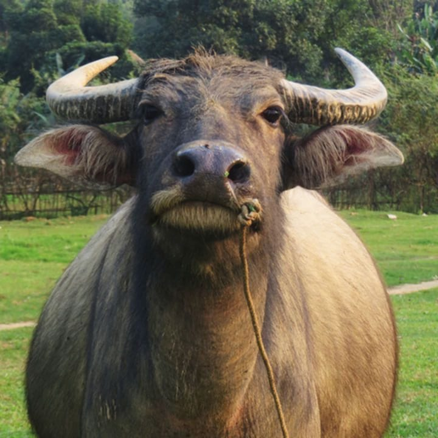

ພະຍາດປາກເປື່ອຍວົງເລັບ
FOOT AND MOUTH DISEASE - FMD
+ ນິຍາມ :
ເປັນພະຍາດຕິດຕໍ່ຮ້າຍແຮງສຳຫລັບສັດຕີນກີບຄູ່ ເຊັ່ນ : ງົວ, ຄວາຍ, ແບ້, ແກະ ແລະ ຫມູ ອາການຂອງສັດທີ່ຕິດພະຍາດນີ້ ອາການເລິ່ມຕົ້ນຈະມີໄຂ້ສູງ ຕໍ່ມາມີບາດຫນອງ ມີເປັນຕຸ່ມນ້ຳໃສໆບໍລິເວນປາກ, ຮີມປາກ, ລີ້ນ ນ້ຳລາຍໄຫຼຫຼາຍ ເຮັດໃຫ້ກິນອາຫານລຳບາກ ແລະສຸດທ້າຍ ມັນກໍລາມມາເຖິງຕີນ ມີບາດຫນອງ ໂດຍສະເພາະຢູ່ກີບຕີນ ເຮັດໃຫ້ສັດເດີນລຳບາກ ຜອມລົງ.
+ວັກຊີນພະຍາດປາກເປື່ອຍລົງເລັບ (FMD VACCINE):
ວັກຊີນປາກເປື່ອຍລົງເລັບ ມີລັກສະນະເປັນນ້ຳ(ແບບພ້ອມໃຊ້ເລີຍ ບໍ່ຕ້ອງໄດ້ຜະສົມຫຍັງ) ເຊື້ອຕາຍ ໃຊ້ໄດ້ກັບສັດໃຫຍ່ ທີ່ອາຍຸ 8 ອາທິດຂື້ນໄປ ສັ່ນກ່ອນໃຊ້ສະເຫມີ ຫຼັງຈາກເປີດໃຊ້ງານແລ້ວ ຄວນໃຊ້ໃຫ້ໝົດພາຍໃນ 24 ຊມ ບໍ່ຄວນໃຊ້ເຫຼົ້າ ຫລື ນ້ຳຢາຂ້າເຊື້ອອື່ນໆເຊັດບໍລິເວນທີ່ຈະສັກ ກ່ອນ ຫລື ຫຼັງ ສາມາດຄຸ້ມກັນໄດ້ປະມານ 4-6ເດືອນ. ແລະເລືອກຂະໜາດ ມ.ລ ໃຫ້ພໍດີກັບສັດຟາມຂອງທ່ານ
+ວິທີໃຊ້:
ໃຊ້ສັກພວກສັດກີບຄູ່ ສັກບໍລິເວນ ຜິວຫນັງແຖວຄໍ
ງົວ-ຄວາຍ 2 ມລ/ຕົວ
ແກະ ແບ້ 1 ມລ/ຕົວ
ຫມູ 1 ມລ / ຕົວ
+ອັດຕາປະລິມານໃຊ້ວັກຊີນທີ່ເປັນນ້ຳ
ງົວ - ຄວາຍ (ຈຳນວນ ວັກຊີນທີ່ຕ້ອງສັກໃຫ້ສັດ) = 2 / (ຈຳນວນ ມ.ລ ທີ່ລະບຸໄວ້ໃນວັກຊີນ)
ເຊັ່ນ : 2 / 50 ມ.ລ = 25ເຂັມ(ຕົວ)
ແກະ - ແບ້ - ຫມູ (ຈຳນວນ ວັກຊີນທີ່ຕ້ອງສັກໃຫ້ສັດ) = 1 / (ຈຳນວນ ມ.ລ ທີ່ລະບຸໄວ້ໃນວັກຊີນ)
ເຊັ່ນ 1 / 100ມ.ລ = 100ເຂັມ(ຕົວ)
ວິທີຮັກສາ : ເກັບໄວ້ໃນຕູ້ເຢັນ 2-8°c ກຸ້ມ 1ປີ (ຖ້າຍັງບໍ່ໄດ້ໃຊ້ງານ ຖ້າໃຊ້ງານແລ້ວ ຕ້ອງໃຊ້ໃຫ້ຫມົດເລີຍພາຍໃນ 24ຊົ່ວໂມງ)
ງົວ - ຄວາຍ (ຈຳນວນ ວັກຊີນທີ່ຕ້ອງສັກໃຫ້ສັດ) = 2 / (ຈຳນວນ ມ.ລ ທີ່ລະບຸໄວ້ໃນວັກຊີນ)
ເຊັ່ນ : 2 / 50 ມ.ລ = 25ເຂັມ(ຕົວ)
ແກະ - ແບ້ - ຫມູ (ຈຳນວນ ວັກຊີນທີ່ຕ້ອງສັກໃຫ້ສັດ) = 1 / (ຈຳນວນ ມ.ລ ທີ່ລະບຸໄວ້ໃນວັກຊີນ)
ເຊັ່ນ 1 / 100ມ.ລ = 100ເຂັມ(ຕົວ)
ວິທີຮັກສາ : ເກັບໄວ້ໃນຕູ້ເຢັນ 2-8°c ກຸ້ມ 1ປີ (ຖ້າຍັງບໍ່ໄດ້ໃຊ້ງານ ຖ້າໃຊ້ງານແລ້ວ ຕ້ອງໃຊ້ໃຫ້ຫມົດເລີຍພາຍໃນ 24ຊົ່ວໂມງ)

ເພີ່ມເຕີມ
- ຫ້າມສັກໃຫ້ສັດທີ່ບໍ່ແຂງແຮງ ອ່ອນເພຍ ຫຼື ປ່ວຍຢູ່ແລ້ວ.
- ຫ້າມບໍ່ໃຫ້ເອົານ້ຳເຫຼົ້າ ຫຼື ນ້ຳຢາຂ້າເຊື້ອອື່ນໆ ເຊັດບ່ອນທີ່ກ່ອນສັກ ແລະ ຫຼັກສັກ ຖ້າຢາກຈະເຊັດກ່ອນແທ້ໆ ຈຳເປັນຕ້ອງໄດ້ໃຊ້ນ້ຳເກືອສະອາດ ຫຼື ເບຕາດີນເຊັດກ່ອນ.
- ຈົງດູແລ ເບິ່ງແຍງສັດຂອງທ່ານໃຫ້ດີ ຖ້າໄກ່ເກີດເປັນພະຍາດມາ ຈັບແຍກທັນທີ ແລ້ວໃຫ້ຢາ(ທີ່ບໍ່ແມ່ນວັກຊີນ) ຕາມສັດຕະວະແພດແນະນຳ.
ພະຍາດອະຫິວາໝູ
SWINE FEVER

+ swine fever ພະຍາດນີ້ຕິດຕໍ່ແຮງ ຕິດຕໍ່ໄດ້ງ່າຍລະຫວ່າງຫມູເຮັດໃຫ້ເກີດໄຂ້ສູງ, ເລືອດອອກໃນອະໄວຍະວະຕ່າງໆ, ສຳຫລັບແມ່ຫມູທີ່ຕັ້ງຄັນກໍຈະມີແທ້ງລູກແລະຕາຍໄດ້ໃນອັດຕາສູງ ສາມາດຕິດຕໍ່ກັນໄດ້ງ່າຍໂດຍຕົງ ອາການເພີ່ມເຕີມກໍຈະມີ ບໍ່ກິນອາຫານ ຫາຍໃຈຫອບ ຂີ້ຕາໂພະ ຖ້າຫມູສີຂາວຈະເຫັນເປັນຈຸດສີແດງ ຂື້ນຕາມໜັງອ່ອນຄື ພື້ນທ້ອງ ແອບແອ້ຂາ ສຸດທ້າຍກໍເລີ່ມລ່ອຍ ອັດຕາການຕາຍມີເຖິງ 80%-95%
+ CSF-Vassine :
ວັກຊິນອະຫິວາຫມູ ເປັນຊະນິດເຊື້ອເປັນ, ໃຊ້ໄດ້ກັບຫມູຕັ້ງແຕ່ອາຍຸ 6-8 ອາທິດຂື້ນໄປ ມີລັກສະນະເປັນຜົງ ຕ້ອງຜະສົມກັບນ້ຳກັ່ນ(ນ້ຳເກືອບໍລິສຸດ)ກ່ອນ ແລ້ວສັ່ນໃຫ້ລະອຽດ ແລະເລືອກຂະໜາດ ມ.ລ ໃຫ້ພໍດີກັບສັດຟາມຂອງທ່ານ ຫລັງຈາກຜະສົມແລ້ວຕ້ອງນຳໃຊ້ໃຫ້ຫມົດພາຍໃນ 2ຊມ ບໍ່ຄວນໃຊ້ເຫຼົ້າ ຫລືຢາຂ້າເຊື້ອອື່ນໆເຊັດໃສ່ບໍລິເວນທີ່ຈະສັກກ່ອນ ຫລື ຫລັງສັກເດັດຂາດ ສາມາດຄຸ້ມກັນໂລກໄດ້ 1 ປີ
+ ວິທີໃຊ້ ໃຊ້ສັກໃສ່ກ້າມຊີ້ນ ຄໍ ຫຼື ກ້າມຂາ ໂຕລະ 1ມລ
+ ຮັກສາໃນອຸນຫະພູມ 2-8°c ກຸ້ມໄດ້2ປີ
ເພີ່ມເຕີມ
- ຫ້າມສັກໃຫ້ສັດທີ່ບໍ່ແຂງແຮງ ອ່ອນເພຍ ຫຼື ປ່ວຍຢູ່ແລ້ວ.
- ຫ້າມບໍ່ໃຫ້ເອົານ້ຳເຫຼົ້າ ຫຼື ນ້ຳຢາຂ້າເຊື້ອອື່ນໆ ເຊັດບ່ອນທີ່ກ່ອນສັກ ແລະ ຫຼັກສັກ ຖ້າຢາກຈະເຊັດກ່ອນແທ້ໆ ຈຳເປັນຕ້ອງໄດ້ໃຊ້ນ້ຳເກືອສະອາດ ຫຼື ເບຕາດີນເຊັດກ່ອນ.
- ຈົງດູແລ ເບິ່ງແຍງສັດຂອງທ່ານໃຫ້ດີ ຖ້າສັດເກີດເປັນພະຍາດມາ ຈັບແຍກທັນທີ ແລ້ວໃຫ້ຢາ(ທີ່ບໍ່ແມ່ນວັກຊີນ) ຕາມສັດຕະວະແພດແນະນຳ.
ພະຍາດເຕົ້າໂຮມເລືອດ ງົວຄວາຍ
HAEMORRHAGIC SEPTICAEMIA


+ ນິຍາມ :
Haemorrhagic Septicaemiaເປັນພະຍາດທີ່ຕິດຕໍ່ຮ້າຍແຮງ ເຮັດໃຫ້ເກີດອາການໄຂ້ຂື້ນສູງ, ເບື່ອອາຫານ ຄໍບວມ, ຕາແດງມີນ້ຳມູກ ນ້ຳຕາໄຫລອອກມາ ຕໍ່ມາ ຖອກທ້ອງ ອາຈົມປົນເລືອດ ຫລັງຈາກມີອາການນີ້ມາປະມານ 6-24ຊົ່ວໂມງ ກໍຕາຍ ສາເຫດທີ່ພາໃຫ້ເກີດກໍມີຫຼາຍປັດໄຈຊັ່ນ ຄວາມຄຽດ ອາການປ່ຽນແປງ ການເຄື່ອນຍ້າຍສັດບ່ອຍໆ
+ ວັກຊີນປ້ອງກັນພະຍາດເຕົ້າໂຮມເລືອດງົວຄວາຍ (HS-Vassine)
- ເປັນຊະນິດນ້ຳ ໃຊ້"ສັກ"ກັບງົວຄວາຍທີ່ມີອາຍຸ 6-8 ອາທິດຂື້ນໄປ ສາມາດໃຫ້ສັດທີ່ກຳລັງໃຫ້ນົມລູກ ຫຼື ສັດທີ່ກຳລັງຖືພາໄດ້ ຄວນສັ່ນກ່ອນໃຊ້ສະເໝີ ແລະເລືອກຂະໜາດ ມ.ລ ໃຫ້ພໍດີກັບສັດຟາມຂອງທ່ານ
+ ວິທີໃຊ້ :
- ຂື້ນກັບແກ້ວບັນຈຸ ຖ້າແກ້ວບັນຈຸ 50ມ.ລ ໃຫ້ງົວຄວາຍຮັບວັກຊີນ 2ມ.ລ/1ຕົວ (ຂື້ນກັບຂະໜາດຕົວ). ສັ່ນໃຫ້ລະລາຍດີກ່ອນໃຊ້, ຈາກນັ້ນ ສັກໃສ່ກ້າມເນື້ອ
+ອັດຕາປະລິມານໃຊ້ວັກຊີນທີ່ເປັນນ້ຳ
ງົວ - ຄວາຍ (ຈຳນວນ ວັກຊີນທີ່ຕ້ອງສັກໃຫ້ສັດ) = 2 / (ຈຳນວນ ມ.ລ ທີ່ລະບຸໄວ້ໃນວັກຊີນ)
ເຊັ່ນ : 2 / 50 ມ.ລ = 25ເຂັມ(ຕົວ)
- ພາຍຫຼັງໃຊ້ງານແລ້ວ ຄວນໃຊ້ໃຫ້ຫມົດພາຍໃນໄລຍະເວລາ 2 ຊົ່ວໂມງ.
+ ໄລຍະຄຸ້ມກັນ : ປົກກະຕິ4-6ເດືອນ ພໍຫມົດ 4 ເດືອນກໍສາມາດສັກເພີ່ມໄດ້ ເບິ່ງສະພາບແວດລ້ອມນຳ
+ ການເກັບຮັກສາ : ເກັບໄວ້ໃນທີ່ມືດ ທີ່ຕູ້ເຢັນໃນອຸນຫະພູມ 4 ອົງສາ ກຸ້ມໄດ້1ປີ